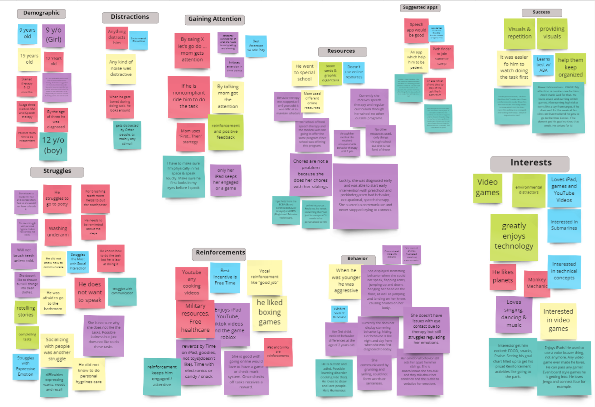
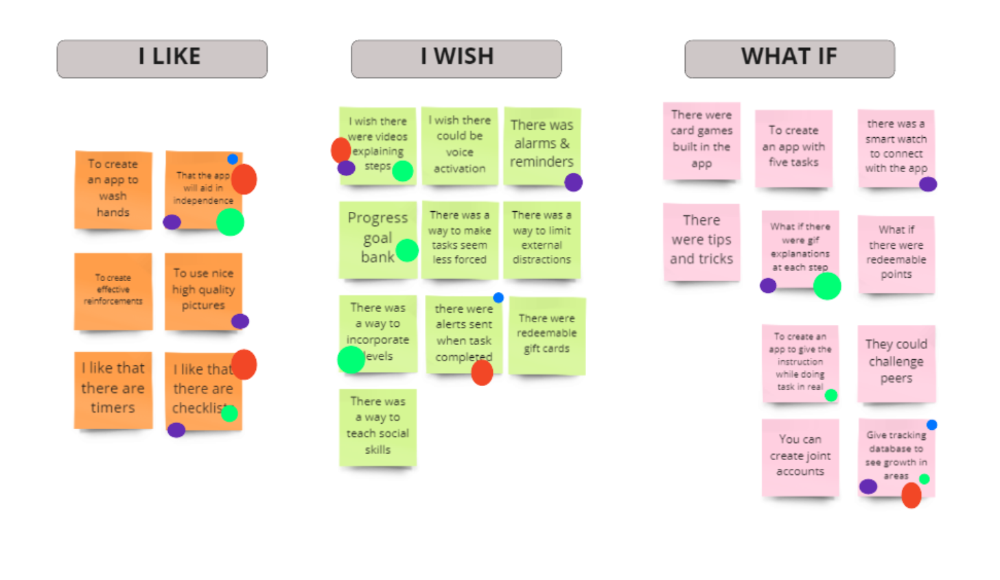
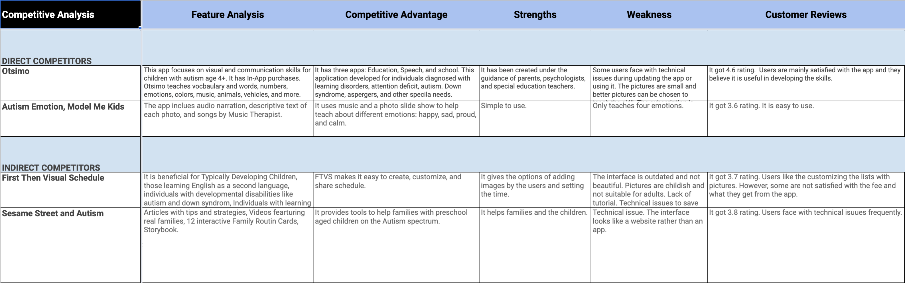

Affinity Diagram
Dot Voting
Competetive Analysis
Empathy Map

Our team designed an application to assist individuals with Autism Spectrum Disorder who struggle with daily hygiene tasks. After researching with parents and caregivers we found the majority of individuals with Autism struggle with taking an initiative performing personal hygiene tasks. However, many of these users do enjoy playing on an electronic device. We believe by implementing an application we will gain their attention and motivate them to do these tasks on their own.
blah blaj blah
Iterations made from user testing:
- Used real pictures (Real Life Experience)
- Changed pictures to children (More Relatable)
- Renamed button steps for Washing Hands (More Straightforward)
- Reduced steps from eight to four (Created Less Confusion)
- Added description to pictures (More Accessible)
- Added option for voice playback (More Accessible)


With supporting text below as a natural lead-in to additional content.
TaskMaster- Levels of engagement (beginner, intermediate, advanced)
- Preferences for interests (theme of app)
- Voice Playback for the steps
- Progress Reports
- Adult vs Child profiles
- Reward System
- Interactions with a Smart Watch